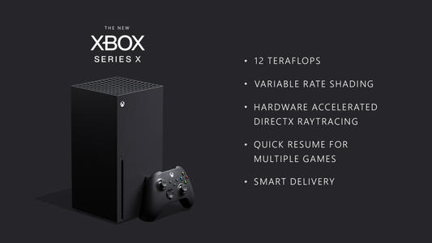

Xbox Series X
Xbox Series X是一款由微软研发并推出的家用电子游戏机。产品接替Xbox One，属于Xbox系列游戏机的第四代。
Xbox Series X是一款由微软研发并推出的家用电子游戏机。产品接替Xbox One，属于Xbox系列游戏机的第四代。其最初于2019年E3游戏展上以研发代号Project Scarlett公开，后于2019年The Game Awards颁奖典礼上公布正式名称，并计划于2020年11月10日发售。
产品外观设计采用黑色长方体造型，内部搭载了拥有12 TFLOPS单精度浮点数运算速度的定制版AMD处理器、GDDR6内存和NVMe固态硬盘。
主要特性
Xbox Series X正在使用“VRS的专利形式，使开发人员能够更有效地利用Xbox Series X的全部功能”。与其将GPU周期均匀地花费在屏幕上每个像素上，不如将GPU对特定游戏角色或重要环境对象的各个效果进行优先排序。此技术可实现更稳定的帧速率和更高的分辨率，而不会影响最终图像质量。
VRS是一项新技术，已被证明可以渲染出更清晰的图像，而对硬件的性能影响较小。
你可以期待由硬件加速的DirectX光线追踪支持的更动态、更逼真的环境，这是主机游戏的第一次尝试。这意味着你在探索游戏世界时会实时获得逼真的照明、准确的反射和逼真的声音。
微软在使光线追踪与Direct X 12兼容方面的工作对于PC游戏玩家来说至关重要，但是现在主机游戏玩家将可以从中受益。
新的“快速恢复”功能使你几乎可以在暂停状态下继续进行多个游戏，而无需等待很长的加载屏幕时间，就可以将自己返回到原处和所从事的状态。
Xbox正在从Xbox无线控制手柄开始优化玩家到控制主机管道中的延迟，Xbox无线控制器在连接到控制主机时会利用高带宽专有无线通信协议。动态延迟输入（DLI）是一项新功能，可将输入立即与显示的内容同步，控件更加精确和响应迅速
Xbox已与HDMI论坛和电视制造商合作，通过自动低延迟模式（ALLM）和可变刷新率（VRR）等功能实现最佳游戏体验。ALLM允许Xbox One和Xbox Series X自动将连接的显示器设置为最低延迟模式。VRR将显示器的刷新率与游戏的帧率同步，从而保持流畅的视觉效果而不会撕裂。确保最小的延迟和最及时的游戏体验。
Xbox Series X支持高达120 fps帧率，使开发人员可以超过标准的60 fps输出，从而支持增强的真实感或快节奏的动作。
这项技术使你能够一次购买一款游戏，并且明白无论你是在Xbox One还是Xbox Series X上玩游戏-不论你使用哪种Xbox，都可以得到该游戏的正确版本。Xbox承诺在所有独家Xbox Game Studios游戏作品（包括Halo Infinite）上使用Smart Delivery，以确保你只需要购买一次，即可为他们选择在任何Xbox主机畅玩最佳的可用版本。这项技术适用于所有开发人员和发行商，他们可以选择将其先用于Xbox One上发行，然后再在Xbox Series X上发行推广。